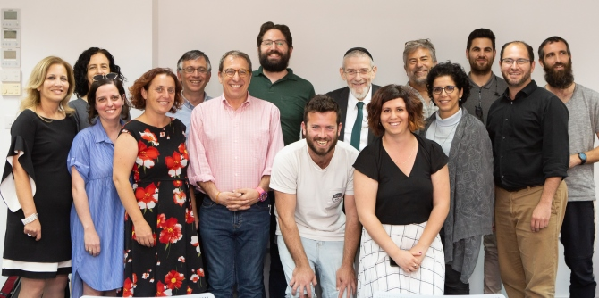

As Israel begins to approach the upcoming Shmita ("sabbatical") year in 5782 (2021–2022), the Mandel Leadership Institute hosted a symposium on the role of the sabbatical year, in which agricultural land is to remain fallow, in Jewish and Israeli culture.
The symposium was coordinated by Mishael Zion, director of the Mandel Program for Leadership in Jewish Culture, and was led by Nigel Savage, president of the US-based organization Hazon: The Jewish Lab for Sustainability; Rabbi Michael Melchior, the former minister for environmental protection and former minister for diaspora affairs, and current (among other positions) president of the nonprofit organization Teva Ivri (Jewish Nature); Einat Kramer, the executive director of Teva Ivri; and Aharon Ariel Lavi of Hazon.
“Dreaming big dreams and engaging in long-term planning are two of the central features of the leadership model that we promote at the Mandel Leadership Institute,” said program director Mishael Zion in his opening address. “We see the Shmita year as an opportunity to advance a range of activities in Israeli society based on a broad vision for Jewish culture," he continued. "The Shmita year is the Jewish people’s sabbatical year, offering an opportunity for a new form of dialogue on issues such as solidarity, education, environment, social equality, economics, and our relationship with our land and with the earth.”

Rabbi Michael Melchior noted that “in the past, public engagement with the Shmita year focused only on the challenges posed by the agricultural restrictions in Jewish law, and this only affected very limited population groups. In recent years, however, a much broader social discourse has emerged regarding the Shmita year. This was driven by initiatives led by organizations such as Teva Ivri, Pa’amonim, and many others (among other factors).”
Einat Kramer provided an overview of activities that had been carried out during the previous Shmita year, and presented the vision of Teva Ivri for 2021–2022. “The upcoming Shmita year will be a major year of discussion and action on social, environmental, and economic issues in Israel at a national level, with government resources to be allocated via a state Shmita commission. The relevant government ministries (the ministries of education, the environment, and social affairs) are also committed to this enterprise,” she said. “Our role now is to relaunch the system that operated during the previous Shmita year, in a much more extensive manner. This is the first step in the marathon of the Israeli sabbatical year.”
Participants in the symposium included intellectuals and practitioners from the public and non-profit sectors, spanning the realms of culture, education, and community building. Together with representatives from various organizations involved in Shmita year activities, the foundations were laid for a “Shmita coalition” that will initiate social, environmental, and economic processes in advance of 2021–2022. The participants took part in break-out “visioning circles,” in which they discussed possible initiatives and activities for the upcoming Shmita year, and considered suitable partners for such initiatives and necessary first steps.
“No-one starts preparing for Shabbat on Friday afternoon,” said Nigel Savage. “Similarly, we must begin preparing for the seventh year now, at the end of the fourth year of the Shmita cycle. This is an important opportunity to discuss the crises and challenges for which the Shmita year offers a new and refreshing perspective: to consider our relationship with the earth against the backdrop of the climate crisis; to ask questions about civil and national solidarity in the context of Israel-Diaspora relations; and to focus on issues relating to inequality in Israeli society.”
“In order for meaningful actions to be taken during the upcoming Shmita year, it is important to define clear goals and recruit the right partners, while bearing in mind the great diversity of Israeli and Jewish society,” concluded Yael Hess, director of the Mandel Leadership Institute. “We are proud to host this gathering at the Institute, and look forward to seeing the acts of leadership that the participants in this event will carry out in the future.”
{kind=link}
{kind=link}